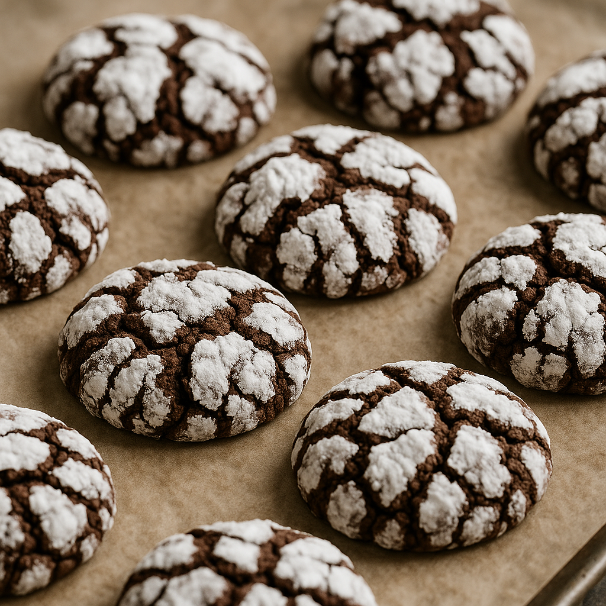

Chocolate Crinkle Cookies
Submitted by Forrest White/Cook Anything Kitchen
Ingredients
- ½ cup corn oil
- 4 oz unsweetened chocolate, melted
- 2 cups sugar
- 4 eggs
- 2 tsp vanilla
- ½ tsp salt
- 2 tsp baking powder
- 2 cups sifted flour
- 1 cup confectioners’ sugar (for rolling)
Directions
- Mix oil, melted chocolate, and sugar together.
- Blend in the eggs one at a time until well mixed.
- Add vanilla.
- In a separate bowl, combine flour, baking powder, and salt.
- Add dry ingredients to wet ingredients and mix until combined.
- Chill dough (typically at least 1 hour or overnight).
- Roll dough into balls and coat generously in confectioners’ sugar.
- Place on a cookie sheet and bake at 350°F until set (usually 10–12 minutes).
Notes
- Chill the dough overnight for deeper flavor and better crinkles.
- Roll dough generously in powdered sugar—thin coating will disappear while baking.
- For extra soft cookies, slightly underbake; edges should be set but centers still soft.
- Add 1–2 teaspoons espresso powder to intensify the chocolate flavor.
- If dough becomes sticky while rolling, pop it back into the fridge for a few minutes.
- Use a cookie scoop for evenly sized cookies and more consistent baking.
Nutritional Information
Serving Size: Per cookie, makes 36
Calories: 115
Fat: 5 g
Carbohydrates: 17 g
Protein: 1.4 g